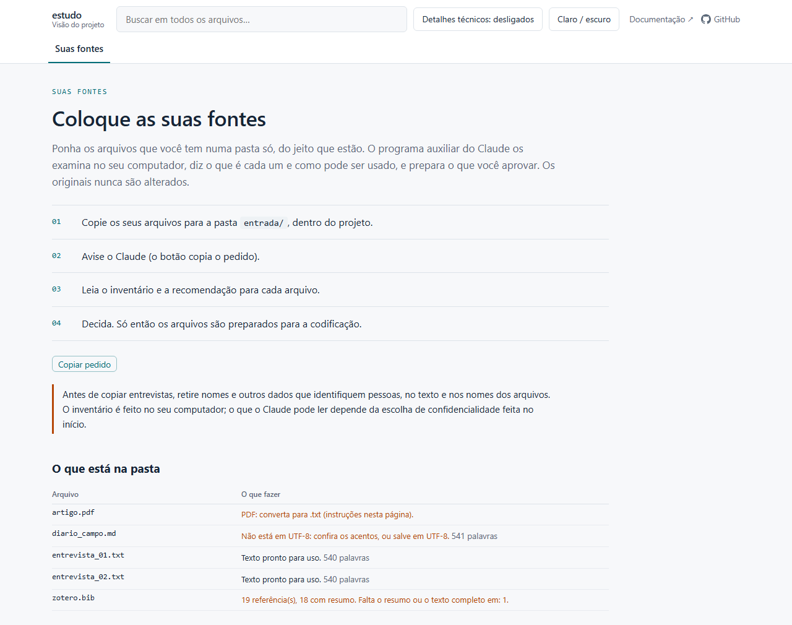
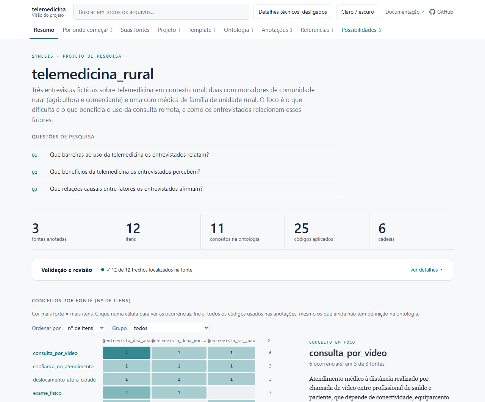
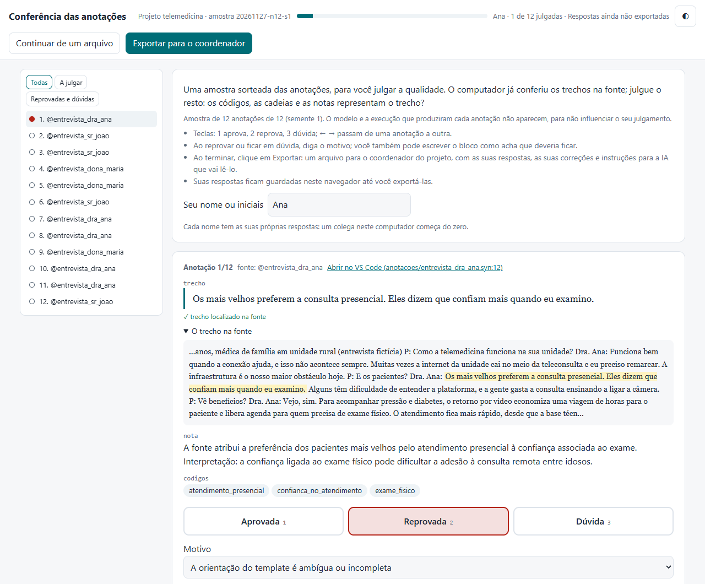

Synesis no Claude Desktop
A Skill para os primeiros passos: instalar e codificar suas fontes com a ajuda do Claude
Esta Skill ensina o Claude a conduzir um projeto Synesis com você. Ela instala as ferramentas, conversa sobre o seu estudo, escreve o template, roda a codificação, confere as citações, sorteia uma amostra para você conferir e mostra os resultados em páginas que abrem no seu computador.
A divisão de papéis é a mesma do resto do Synesis: a IA propõe, o compilador confere, o pesquisador decide. O Claude conduz a conversa e prepara os arquivos. As perguntas de pesquisa, as categorias e a aprovação do template continuam sendo suas.
A Skill tem um papel didático e de conferência: ela ensina a linguagem e o método e ajuda a revisar os dados. Ela não substitui o trabalho direto com as ferramentas do Synesis (o compilador, as exportações, a extensão do VS Code); quando uma tarefa é pesada, o Claude mostra como fazê-la com elas.
O vídeo é o episódio E06 do Curso Synesis 101.
A versão atual é a 0.4.0: projetos grandes, conferência em equipe e resultados pelas ferramentas do Synesis. A Skill foi testada de ponta a ponta com projetos de prova e está em fase de testes com pesquisadores. O seu retorno ajuda a melhorá-la (veja Se algo der errado).
O que você precisa
- Claude Desktop (Windows ou macOS), numa conta com acesso à aba Code.
- Uma pasta no seu computador para o projeto, e as suas fontes. Não é preciso organizá-las antes: a Skill mostra onde colocá-las e em que formato (veja Colocar as suas fontes).
- Internet na primeira vez, para instalar as ferramentas.
- Cerca de uma hora para a primeira sessão.
Você não precisa instalar Python nem saber programar. O VS Code é opcional.
A Skill precisa de um terminal e do seu disco. Ela funciona na aba Code do Claude Desktop (uma sessão local), e não no chat do claude.ai nem no Cowork.
1. Instalar a Skill (uma vez)
- Baixe o arquivo da Skill: synesis-skill.zip.
- No Claude Desktop, abra Customize → Plugins e use Add para enviar o arquivo.
- O Desktop avisa para instalar apenas plugins em que você confia. Este é o plugin do projeto Synesis.
Se a sua organização não permite enviar plugins, peça ao administrador.
Remova o plugin Synesis em Customize → Plugins e envie o arquivo novo. Os seus projetos não mudam.
2. Abrir a primeira sessão
Abra a aba Code e escolha a pasta do projeto.
Escolha o modo de permissão Manual. O Claude passa a pedir a sua aprovação antes de cada comando, e você vê o que será instalado.
Digite
/synesise descreva o que quer fazer. Por exemplo:/synesisQuero codificar minhas três entrevistas sobre telemedicina com o Synesis. As transcrições estão na pastafontes.
Se quiser só experimentar, use a pasta de exemplo.
3. O que o Claude faz
Em ordem:
- Pergunta sobre sigilo antes de abrir qualquer arquivo (veja Sigilo dos dados).
- Instala as ferramentas do Synesis e mostra um relatório. Isso acontece uma vez por computador.
- Recebe as suas fontes: cria uma pasta, diz o que é cada arquivo e recomenda um formato. Você decide.
- Conversa sobre o estudo: as suas perguntas de pesquisa, o que extrair das fontes, se você quer categorias livres ou fechadas, relações de causa ou escalas.
- Escreve o template (a descrição do que será codificado) e mostra um exemplo. Você aprova o template.
- Codifica cada fonte, uma por vez, e monta a ontologia dos conceitos.
- Valida e confere as citações no texto original.
- Sorteia uma amostra das anotações para você conferir (veja Conferir uma amostra) e mostra os resultados.
Quando você volta a um projeto que já existe, o Claude primeiro mede o tamanho dele, em um segundo e sem ler os seus arquivos, e oferece uma lista numerada do que dá para fazer: conhecer o projeto, ler mais a fundo, conferir uma amostra, ver os resultados, descobrir o que o projeto pode responder, resolver problemas, continuar, exportar.
Durante todo o trabalho, você acompanha o projeto numa página que abre no navegador: a visão do projeto.
No fim, o Claude resume o resultado: erros e avisos do compilador, quantas citações foram encontradas nas fontes, quantos conceitos a ontologia tem, e uma lista de pontos que valem a sua conferência.
Colocar as suas fontes
Na primeira sessão, o Claude cria a pasta entrada/ e abre a página Suas fontes. Copie os arquivos para lá, do jeito que estão, e avise o Claude.

Um programa examina os arquivos no seu computador e diz o que fazer com cada um. Os originais nunca são alterados.
| O que você tem | Formato | O que é codificado |
|---|---|---|
| artigos, numa revisão de literatura | .bib com resumos (Zotero, Mendeley, Scopus, Web of Science) |
só o resumo de cada referência |
| entrevistas, diários de campo, documentos, artigos completos | .txt, .md ou .docx |
o texto inteiro |
| formulários, respostas abertas, posts, notícias, currículos | .toml, um registro por arquivo |
as seções que o template indica |
Converta os PDFs em .txt (UTF-8) antes de colocá-los na pasta. A página mostra como, e o que conferir: colunas, cabeçalhos, palavras partidas, páginas digitalizadas. Sem dados sigilosos, um conector de PDF do Claude pode ajudar; pergunte ao Claude.
Antes de copiar entrevistas, retire nomes e outros dados que identifiquem pessoas, no texto e nos nomes dos arquivos. Se preferir, peça ao Claude chaves neutras (ent01, ent02…).
Acompanhar o trabalho: a visão do projeto
A Skill mantém a página view/index.html, que abre com dois cliques, sem internet. Ela é só de leitura e se atualiza a cada etapa. Abra a visão do projeto de exemplo.

- Resumo: as questões de pesquisa, o tamanho do corpus, o que precisa de atenção e a matriz de conceitos por fonte. Clique numa célula para ler os trechos.
- Por onde começar: os próximos passos do seu projeto.
- Os arquivos: cada bloco é um cartão, com a sua origem e os seus problemas em linguagem simples. Passe o mouse sobre as palavras em azul para entender a linguagem.
- Pedir ao Claude: copia um pedido pronto sobre aquele bloco, para você colar na conversa. O Claude explica e propõe, e espera a sua aprovação.
- Possibilidades: parte do que você quer investigar (comparar, conectar, organizar, sustentar uma interpretação) e mostra o recurso do Synesis que faz isso.
A página fala a língua do seu projeto: português, inglês, espanhol, francês, alemão, italiano ou chinês.
Projetos grandes
Um projeto com milhares de anotações não cabe numa página que o navegador abra depressa. A visão trabalha então em amplitude e profundidade, como em Big Qual (Weller et al., 2023): os números, a matriz (por grupo: as pastas das anotações ou uma categoria das fontes) e os problemas valem sempre para o projeto inteiro, mas os cartões mostrados são uma seleção.
| Visão | O que mostra |
|---|---|
| Panorâmica (padrão nos projetos grandes) | o template completo, uma fonte de cada um dos maiores grupos (no máximo oito), os conceitos mais usados e alguns raros |
| Por amostragem | cerca de 30 fontes sorteadas em todos os grupos, proporcionalmente ao tamanho |
| Completa | tudo, ou um grupo, uma fonte ou um conceito lido por inteiro |
Um aviso no alto da página diz o que ela mostra e tem botões para pedir mais ao Claude, com o tempo que a visão completa leva. Blocos com problema aparecem mesmo fora da seleção (até 40). No maior projeto de teste (958 fontes, 3.943 anotações), a página caiu de 47 MB para 2,3 MB.
O que a Skill gera
Os exemplos abaixo vêm de uma sessão real com as três entrevistas fictícias da pasta de exemplo. São arquivos de texto comuns do Synesis; você pode abri-los em qualquer editor.
Projeto (telemedicina.synp)
O projeto reúne os arquivos e registra as perguntas de pesquisa.
PROJECT telemedicina_rural
TEMPLATE "template.synt"
INCLUDE BIBLIOGRAPHY "referencias.bib"
INCLUDE ANNOTATIONS "anotacoes"
INCLUDE ONTOLOGY "ontologia"
QUESTIONS
Q1: Que barreiras ao uso da telemedicina os entrevistados relatam?
Q2: Que benefícios da telemedicina os entrevistados percebem?
Q3: Que relações causais entre fatores os entrevistados afirmam?
END QUESTIONS
...
END PROJECTTemplate (template.synt)
Cada campo tem instruções (GUIDELINES) com exemplos de outro tema, para o modelo não copiar das suas fontes.
FIELD trecho TYPE QUOTATION
SCOPE ITEM
DESCRIPTION Trecho copiado literalmente da fala do entrevistado
GUIDELINES
Copie de uma a três frases contínuas, exatamente como aparecem na fonte.
Copie apenas falas do entrevistado, nunca as perguntas do entrevistador.
Não corrija, não resuma, não junte frases distantes.
Correto: "Depois que pintaram a faixa, comecei a ir de bicicleta todo dia."
Errado: "A moradora passou a usar a bicicleta diariamente após a faixa."
END GUIDELINES
END FIELDAnotações (anotacoes/)
Cada trecho vira um ITEM: a citação literal, a nota, os códigos e, quando a fonte afirma, uma cadeia.
SOURCE @entrevista_dona_maria
descricao: Entrevista fictícia com agricultora de 62 anos, moradora de comunidade rural, sobre o uso de consulta por vídeo.
END SOURCE
ITEM @entrevista_dona_maria
trecho: O doutor não me tocou, não olhou a minha perna de perto. Para mim, médico bom é aquele que põe a mão na gente. Se não pode examinar, eu fico achando que ele não viu direito.
nota: A fonte afirma que a ausência de toque e exame físico gera desconfiança sobre a qualidade do atendimento; sugere barreira de natureza cultural e de confiança, distinta da técnica.
codigos: exame_fisico, confianca_no_atendimento
cadeia: exame_fisico -> HABILITA -> confianca_no_atendimento
END ITEMOntologia (ontologia/)
Cada conceito ganha uma definição com critério de aplicação e um tema.
ONTOLOGY exame_fisico
definicao: Avaliação clínica direta do corpo do paciente por meio de toque, inspeção e palpação durante o atendimento, percebida pelos entrevistados como sinal de que o médico examinou de fato. Aplica-se quando a fonte menciona a presença, a ausência ou a necessidade desse contato físico no atendimento; não se aplica a conversa ou observação apenas por vídeo sem referência ao exame.
grupo: pratica_clinica
END ONTOLOGY4. Conferir uma amostra
O Claude sorteia uma amostra das anotações (30 por padrão, espalhadas pelos grupos do projeto) e monta a página de conferência em review/index.html. Abra a conferência de exemplo.

- Escreva seu nome ou iniciais.
- Leia o trecho (o computador já conferiu que ele está na fonte; abra O trecho na fonte para ler em volta) e o que foi codificado.
- Escolha Aprovada, Reprovada ou Dúvida (teclas 1, 2, 3). Ao reprovar ou ficar em dúvida, escolha um motivo e, se quiser, escreva uma nota ou proponha uma correção: o bloco como você acha que deveria ficar.
- Clique em Exportar para o coordenador. Sai um arquivo
.mdcom as suas respostas, as suas correções e instruções para a IA que vai lê-lo.
A amostra fica fixa no sorteio: você julga as anotações como estavam naquele momento. A página não mostra qual modelo produziu cada anotação, para não influenciar você, e mostra a reprovação observada na amostra; como a amostra dá mais peso aos grupos pequenos, o Claude informa à parte uma estimativa para o projeto inteiro.
O coordenador envia a página de conferência a cada pesquisador (ela traz trechos das fontes: envie só a quem pode lê-los). Cada um julga no seu computador, com o seu nome, e envia o arquivo exportado ao coordenador, que entrega todos ao Claude. O Claude informa o quanto vocês concordam (kappa de Cohen, alfa de Krippendorff) e põe lado a lado as correções propostas. Uma correção só entra no projeto quando o coordenador aprova.
5. Ver os resultados
A página de resultados fica em dashboard/dashboard.html. Ela abre com dois cliques, sem internet e sem servidor.
| Aba | O que mostra |
|---|---|
| Fontes | cada trecho codificado, com a citação, a nota e os códigos. A citação aparece como encontrada, não encontrada ou não verificável no texto original |
| Códigos | cada código, com a definição e todas as evidências |
| Relações e Questões | as relações entre conceitos e onde estão as evidências de cada pergunta de pesquisa |
| Conferência | o resultado de cada conferência: aprovadas, reprovadas, dúvidas, motivos, correções propostas, concordância |
| Qualidade | o que ainda precisa de atenção |
| Método | o template completo e como o resultado foi produzido |
Num projeto grande, o Claude não monta esta página: ela demoraria para ser feita e pesaria para abrir. Ele mostra como ler os resultados com as ferramentas do Synesis, o que também ensina a usá-las:
synesis compile projeto.synp --xls resultados.xlsx # uma planilha, em segundos (também --csv ou --json)
synesis export projeto.synp # as exportações que o projeto declaraOu use a extensão do Synesis para o VS Code. A visão do projeto e a conferência funcionam em qualquer tamanho.
Quando algo estiver errado, o Claude não corrige o trecho à mão. Ele classifica o problema com você antes de agir: instrução ambígua no template, falha pontual, texto-fonte mal convertido ou divergência legítima de interpretação.
Testar com o nosso exemplo
Quer ver a Skill funcionando sem usar as suas fontes? Baixe a pasta de exemplo. Ela traz:
fontes/: três entrevistas fictícias sobre telemedicina em comunidades rurais, prontas para a Skill codificar. Copie a pasta para um lugar novo, abra-a na aba Code e digite:/synesisQuero codificar minhas três entrevistas sobre telemedicina. As transcrições estão em fontes.resultado/: o que a Skill gerou numa sessão real com essas entrevistas, para você comparar com o seu: projeto, template, anotações, ontologia e as três páginas. Para vê-las agora: a visão do projeto, a conferência e os resultados.
A codificação é feita por um modelo de IA. O seu resultado será parecido com o de resultado/, não idêntico: compare a estrutura e os critérios, não cada palavra.
Custos
Há dois modos de codificação, e o Claude explica os dois antes de começar:
| Modo | Quem codifica | Custo |
|---|---|---|
| Sessão do Claude | o próprio Claude da sua assinatura | dentro dos limites do seu plano |
| API | um modelo por chave de API (Anthropic, OpenRouter) | cobrado pelo provedor; o Claude faz um piloto com 2 ou 3 fontes e mostra o custo antes de codificar tudo |
Nunca digite uma chave de API no chat. O Claude cria um arquivo .env na pasta do projeto com o campo vazio, e você cola a chave diretamente nele.
Sigilo dos dados
Tudo o que o Claude lê sai do seu computador e vai para a Anthropic (e, no modo API, para o provedor escolhido). Por isso o Claude pergunta antes de abrir as fontes e propõe uma modalidade:
- A. Nuvem: o Claude lê as fontes. Use quando não houver dados sigilosos.
- B. Exposição reduzida: o Claude trabalha só com o método e com exemplos inventados; a codificação roda num modelo local (Ollama). Não é um processamento inteiramente local.
- C. Local: o Claude não participa. Para dados sob sigilo legal ou ético estrito, use o Synesis no VS Code com um modelo local.
O que fica na pasta do projeto
| Arquivo ou pasta | Conteúdo |
|---|---|
*.synp |
o projeto |
template.synt |
o método |
*.bib |
as fontes bibliográficas |
entrada/ |
os seus arquivos originais; não a compartilhe se houver dados pessoais |
fontes/ |
os textos preparados |
anotacoes/, ontologia/ |
o resultado da codificação |
runs/ |
o registro de cada execução: o que foi pedido ao modelo, o que ele respondeu e as decisões que você tomou |
view/, review/, dashboard/, saida/ |
arquivos gerados, que podem ser refeitos a qualquer momento (as respostas da conferência ficam em runs/ depois de importadas) |
Guarde a pasta inteira; ao compartilhar, deixe de fora o .env e a entrada/. Com ela, qualquer pessoa reconstrói os seus resultados e as suas páginas. Os arquivos são os mesmos do Synesis: você pode abri-los no VS Code quando quiser.
Se algo der errado
- “comando não encontrado” logo depois da instalação: abra uma nova sessão na aba Code. Na mesma sessão, o Claude usa o caminho completo das ferramentas.
- O Windows bloqueou o instalador: o Claude tenta outro caminho. Se a máquina for institucional, pode ser preciso falar com o suporte de TI.
- Dúvidas sobre a linguagem: peça ao Claude, que consulta o guia de referência instalado.
- Erros do Synesis e sugestões: abra uma issue em https://github.com/synesis-lang/synesis/issues.
Próximos passos
- Getting Started: o primeiro projeto à mão, sem a Skill.
- Curso Synesis 101: vídeos curtos sobre a linguagem.
- Codificação com IA (synesis-coder): o que a Skill usa para codificar.